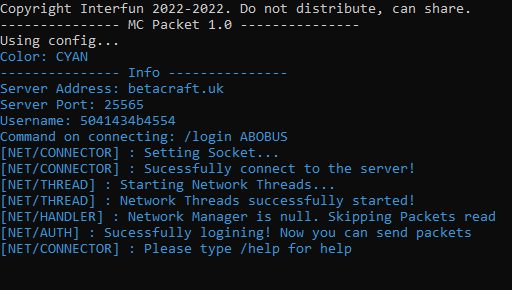
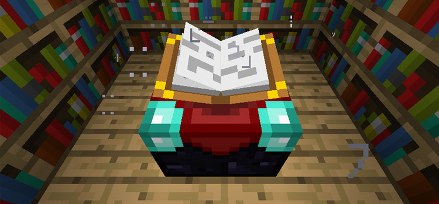
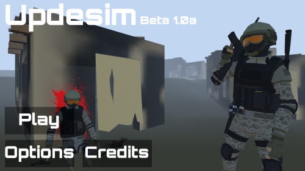
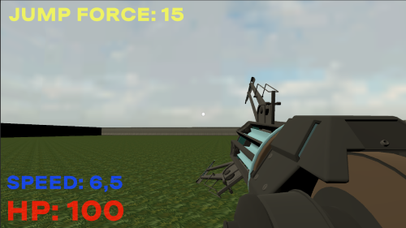
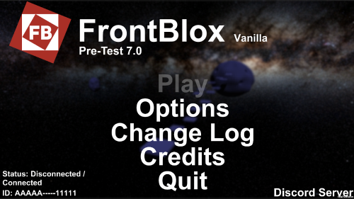
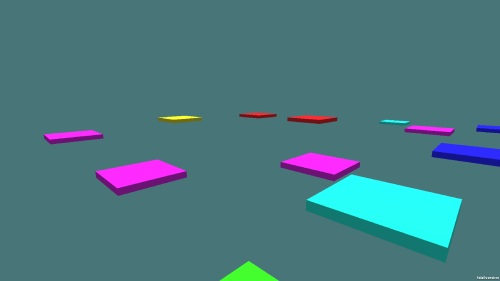
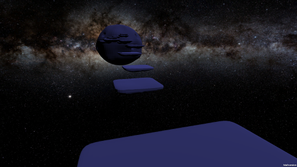
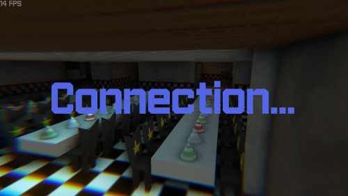
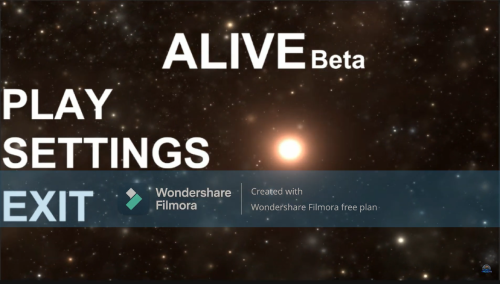

Back
Portfolio
Здесь будет содержаться большая часть моих проектов
Проекты будут сортироваться от более свежих к более старым
MC Packet

Язык программирования: Java
Простенькая программа выдающая себе за клиент. Основая её цель это перехват пакетов, а также отправка пакетов. На данный момент проект заморожен
Charms

Язык программирования: Java
ModLoader для старых версий (alpha-1.2.5) игры Minecraft. Разработан с помощью софта RetroMcp. На данный момент проект заморожен
Github Charms
Github RetroMcp
Updesim

Язык программирования: C#
Движок: Unity
Проект начал своё существование ещё в 2019. Изначально задумывался как синглплеер игра с сюжетом, но позже полностью перешёл в мультиплеер. На данный заморожен
Discord Updesim
Gloomy Store

Язык программирования: C#
Движок: Unity
Задумывалась как порт игры SCP-3008 или же Infinity IKEA. Механики, такие как инвентарь, еда, мебель и различные предметы, взаимодействие с окружением и др. В игре также есть персонал, cмена дня и ночи, также генерация мира и костыльная оптимизация в виде недо чанков. На данный момент проект заморожен
Bordox

Язык программирования: C#
Движок: Unity
Песочница с мультиплеером, с поддержкой рахличных аддонов и модов. На данный момент проект заморожен на неопределённый срок из за проблем с back-end частью
FrontBlox



Язык программирования: C#
Движок: Unity
Задумывался как аналог игры Roblox. В игре есть разные карты и возможность их выбора, также есть игровой чат. В новом обновлении которое не вышло должен был появится игровой режим Infection и 2 новых карты. На данный момент проект заморожен.
Fnaf RP

Язык программирования: C#
Движок: Unity
Мультиплеер игра , концепция которой была играть за людей и аниматронников из игры Five Nights At Freddy's. В игре должно было быть 2 режима. Role Play (Ролевая Игра) и Охота. В режиме Охота охраннику нужно было продержаться до 6 утра смотрев на камеры и контролируя двери. Аниматронники же могут ходить по пиццерии и воспроизводить различные звуки. Но к соэалению сейчас он закрыт.
Alive

Язык программирования: C#
Движок: Unity
Игра задумывалась о том, что на некой планете людская лаборатория перестала отвечать на связь, и на планету в капсуле отправили инженера у которого к сожалению случилась катастрофва и перестала работать кислородная система вместе с двигателями аппаратуры. На протяжении всей игры игрок будет встречать различные локации указывающие что дальше делать. На данный момент проект заморожен
Геймплей тестовой версии
Copyright Onran 2022-2024